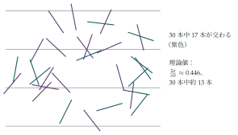

STEP I 1993、第16問
先に進む前に問題を読んでおこう。問題は STEP Support Programme の問題データベースにある： step.maths.org/questions/93-s1-q16
導入
平行に板が張られた床の上に針を落とす。針が板の継ぎ目をまたぐ確率には、どこにも円が見当たらないにもかかわらず \(\pi\) が現れる。何度も投げて交わった回数を数えれば、実験によって \(\pi\) を推定できるのである。これがビュフォンの針（Buffon’s needle）であり、ビュフォン伯ジョルジュ＝ルイ・ルクレール（Georges-Louis Leclerc, Comte de Buffon）が1733年に提起し、1777年に自ら解いたものである。これは幾何確率（geometric probability）の最初の問題であり、あらゆるモンテカルロ法（Monte Carlo method）の祖先でもある。
\(\pi\) は角度から生じる。針の向きは半回転の範囲で一様に分布しており、直線に対する針の「影」の長さをすべての向きについて平均すると、因子 \(\frac2\pi\) が得られる。この問題では、その計算を \(\cos^{-1}\) の積分によって行う。
取りかかる前に
針の中心が最も近い直線から距離 \(x\) のところにあり、針が直線の垂線と角 \(y\) をなしているとする。針は直線に向かってどこまで届くか。
針の半分ずつの長さは \(a\) であり、その直線に垂直な成分は \(a\cos y\) である。したがって、針が最も近い直線と交わるのは、ちょうど \(a\cos y \geq x\) のときである。（\(a < b\) であるから、針がほかの直線に届くことはない。）
順を追って解く
段階 1 積分
\(t = \cos y\) とおくと、\(t\) が \(0\) から \(1\) まで動くとき、\(y = \cos^{-1}t\) は \(\frac\pi2\) から \(0\) まで動き、\(\mathrm{d}t = -\sin y\,\mathrm{d}y\) である。よって \[\int_0^1\cos^{-1}t\,\mathrm{d}t = \int_0^{\pi/2}y\sin y\,\mathrm{d}y = \bigl[-y\cos y\bigr]_0^{\pi/2} + \int_0^{\pi/2}\cos y\,\mathrm{d}y = 0 + 1 = 1. \qed\] （別解：この積分は \(\cos^{-1}\) のグラフと座標軸で囲まれた部分の面積であり、これは \(y = \cos x\) の \(0\) から \(\frac\pi2\) までのグラフの下の面積を直線 \(y = x\) に関して折り返したものに等しい。）
段階 2 位置を固定したとき
\(x\) を固定したとき、どのような角 \(y\) で交わるか。その確率はいくらか。
\(x \geq a\) ならば、針は直線に届かない。\(x < a\) ならば、交わるためには \(\cos y \geq \frac xa\)、すなわち \(y \leq \cos^{-1}\frac xa\) が必要である。\(Y\) は \([0, \frac\pi2]\) 上の一様分布（uniform distribution）に従うから、 \[\mathrm{P}(\text{交わる} \mid X = x) = \frac{2}{\pi}\cos^{-1}\frac xa \qquad (0 \leq x < a). \qed\]
段階 3 位置について平均する
\(X\) は \([0, b]\) 上の一様分布に従い、その確率密度（density）は \(\frac1b\) であるから、 \[\mathrm{P}(\text{交わる}) = \frac1b\int_0^a\frac2\pi\cos^{-1}\frac xa\,\mathrm{d}x = \frac{2a}{\pi b}\int_0^1\cos^{-1}t\,\mathrm{d}t = \frac{2a}{\pi b}, \qed\] ここで \(x = at\) と置換した。
針の長さがちょうど間隔の半分である場合（\(a = \frac{b}{2}\)、したがって針の長さ \(2a\) は \(b\) に等しい）、交わる確率は \(\frac1\pi\) となる。\(\pi\) を小数第2位まで推定するには、何回投げる必要があるだろうか。

振り返り
2つの独立な座標。 針の位置と角度は独立（independent）かつ一様であったので、確率は1変数ずつ計算できる二重積分となった。
条件をつけてから平均する。 まず \(x\) を固定して角度について平均し、次に \(x\) について平均した。
置換によって定数が姿を現す。 \(x = at\) と尺度を変えることで、答えはただ1つの普遍的な積分に帰着した。
背後にある数学
ビュフォンの麺
ほとんど計算なしで答えを見通す方法がある。針を任意の形に曲げて「麺」（noodle）にし、それが直線と交わる回数を \(C\) とする。期待値の線形性（linearity of expectation）により、曲線の交わる回数の期待値はその小さな各部分についての和であるから、長さに比例する。すなわち、ある定数 \(\kappa\) に対して \(\mathrm{E}(C) = \kappa L\) である。\(\kappa\) を求めるために、麺として直径が直線の間隔 \(2b\) に等しい円をとる。この円は常にちょうど2回交わり、その長さは \(2\pi b\) である。よって \(\kappa \cdot 2\pi b = 2\) となり、\(\kappa = \frac{1}{\pi b}\) を得る。長さ \(2a < 2b\) のまっすぐな針は高々1回しか交わらないので、\(\mathrm{P}(\text{交わる}) = \mathrm{E}(C) = \frac{2a}{\pi b}\) である。この議論はバルビエ（Joseph-Émile Barbier）によるもので（1860年）、確率論的推論の珠玉である。\(\pi\) は、定数を較正するために選んだ円から来ているのである。
\(\pi\) の推定と、してはいけないこと
\(n\) 本の針を投げて \(c\) 本が交わったとすると、\(\frac cn \approx \frac{2a}{\pi b}\) より \(\pi \approx \frac{2an}{bc}\) である。誤差は \(\frac{1}{\sqrt n}\) 程度でしか小さくならないので、\(\pi\) を小数第3位まで求めるには約100万回投げる必要がある。1901年、イタリアの数学者 Mario Lazzarini は、\(3408\) 回の試行から \(\pi \approx \frac{355}{113} = 3.1415929\ldots\)（小数第6位まで正しい）を得たと主張した。統計学者たちは、この結果は出来すぎていて信じがたいと指摘している。\(3408\) 回の試行と注意深く選んだ針の長さのもとでは、\(\frac{355}{113}\) はちょうど \(1808\) 回の交差から生じるのであり、ちょうどよいところで実験を打ち切ればこの値が得られてしまう。これは都合のよい結果だけを報告することへの戒めとして、古典的な教訓話となっている。
ビュフォンは博物学者であり、パリの王立植物園の園長を務め、全 \(36\) 巻の博物誌の著者でもあった。彼は1733年に針の問題（および正方形のタイルを用いた版である「フラン・カロー」（franc-carreau）遊び）を科学アカデミー（Académie des Sciences）に提出し、1777年にその解を発表した。彼のねらいは、算術だけでなく幾何学も確率に用いることができると示すことであった。ここから積分幾何学（integral geometry）、すなわちランダムな直線と、それらが曲線や曲面と交わる様子を扱う理論が生まれた。これは現在、ステレオロジー（stereology）、すなわち2次元の断面から3次元の構造（組織中の細胞など）の大きさや形を推定する科学において用いられている。
思考のスキル
結果がいくつかの独立な連続確率変数に依存するとき、ある事象の確率は、その事象が起こる領域の上で同時確率密度関数を積分したものである。
大学では、これが連続確率論の基礎となる。同時確率密度関数（joint density）、周辺分布（marginal distribution）、変数変換（change of variables）であり、これらはすべて 第 12.21 節 と 第 12.22 節 で再び現れる。
次の一歩
長い針。 \(a > b\) ならば、針は2本以上の直線と交わることがある。それでも交わる回数の期待値は \(\frac{2a}{\pi b}\) であることを示せ。
麺。 長さ \(2a\) の針を直角に曲げる（長さ \(a\) の2本の腕をもつ）。交わる回数の期待値はいくらか。
正方形のタイル。 半径 \(r\) の硬貨を、1辺 \(s > 2r\) の正方形のタイルを敷いた床の上に投げる。硬貨が完全に1枚のタイルの内部に収まる確率を求めよ。
Lazzarini の針。 \(a = \frac56b\)（したがって \(\frac{2a}{\pi b} = \frac{5}{3\pi}\)）のとき、\(3408\) 回の試行で \(1808\) 回交わると、推定値 \(\pi \approx \frac{355}{113}\) が得られることを示せ。
さらに学ぶために
Daniel Klain & Gian-Carlo Rota, Introduction to Geometric Probability（Cambridge University Press）。ビュフォンの針から話が始まる。
Lee Badger,「Lazzarini’s lucky approximation of \(\pi\)」, Mathematics Magazine 67 (1994)。疑わしい実験の統計学。
Paul Nahin, Digital Dice（Princeton University Press）。確率の問題に対するモンテカルロ法。